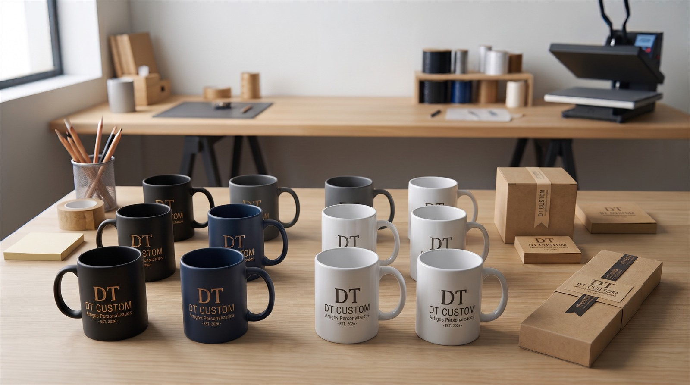

Canecas brancas, pretas, azuis ou cinza com o seu logótipo, frase ou fotografia. Uma prenda simples e muito apreciada.

Canecas em materiais reciclados e compostáveis, em várias capacidades.
| Modelo | Material | Capacidade | Cores |
|---|---|---|---|
| PLA 100% compostável | 350 ml | Branco | |
| Polipropileno (PP) | 350 ml | Creme | |
| PP reciclado | 300 ml | Preto, azul-marinho e branco | |
| Aço inoxidável reciclado e PP reciclado | 140 ml | Preto, branco e azul-marinho | |
| PP reciclado e aço inoxidável reciclado | 400 ml | Cinza claro, preto e azul-marinho | |
| PP reciclado e cortiça | 400 ml | Azul-marinho, branco e preto |
Canecas brancas e foscas em preto, azul-marinho e cinza.
Design nítido e com boa resistência ao uso diário.
Para particulares, datas especiais ou brindes empresariais.
Conte-nos a sua ideia e enviamos um orçamento sem compromisso.
Pedir orçamentoFoto em breve